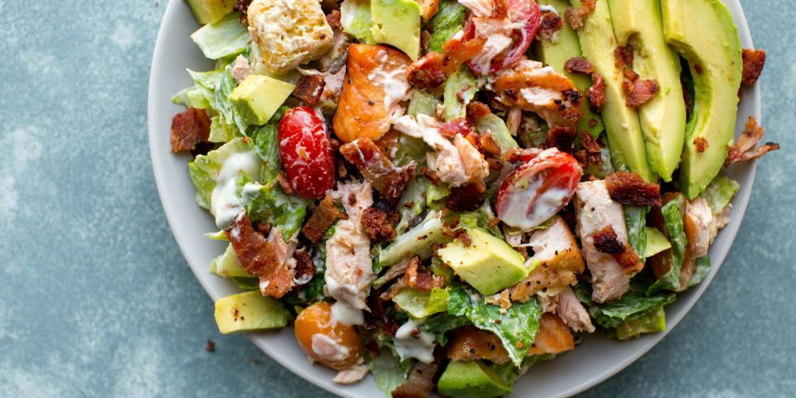

Салатите в италианската кухня
Салатите са много хранителни, богати на различни съставки и биха били достатъчни за обедното или вечерното ви меню.
Тук ще намерите рецепти на:
Италианска зелена салата
Италианска топла салата
Салата с рукола, гриловани нектарини, прошуто и сирене бурата
Италианска зелена салата
Продукти:
2 чаши накъсана маруля1 чаша накъсана цикория
1 чаша накъсана червена маруля
¼ чаша нарязан пресен лук
½ червена чушка, нарязана на пръстени
1 чаша рукола
12 чери домата
¼ чаша масло от гроздови семки
2 супени лъжици пресен босилек
¼ чаша оцет балсамико
2 супени лъжици лимонов сок
сол и черен пипер на вкус